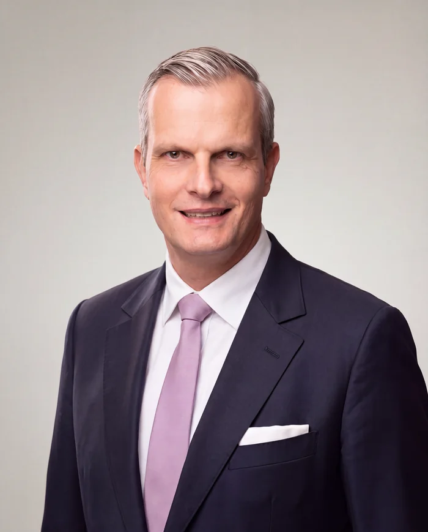

Dr. med. Christian R. Otterstedde
Facharzt für Hals-Nasen-Ohren-Heilkunde
Nach dem Abitur am humanistischen Gymnasium Paulinum in Münster Studium der Humanmedizin an der Westfälischen Wilhelms-Universität Münster, mit Studienaufenthalten an der Washington University in St. Louis und an der Harvard Medical School in Boston.
Danach wissenschaftlicher Mitarbeiter an der Universitäts-HNO-Klinik Heidelberg unter Prof. Dr. Hagen Weidauer. Wissenschaftliche Arbeiten zu genetischen Hörstörungen, insbesondere dem Usher-Syndrom. Promotion bei Prof. Dr. Christoph Reisser zur Klassifizierung des Usher-Syndroms mit Beschreibung eines neuen Subtypus.
Häufige Fortbildungsaufenthalte in den USA, regelmäßige Teilnahme an klinischen Studien in der Allergologie sowie der Hörsturz- und Tinnitustherapie, Fachpublikationen. Vorstand des Harvard Club Rhein-Main.